绝 杀
电竞 × 重生 × 创业思维
第一章 · 重生网吧
↓ 向下滑动开始
01/45
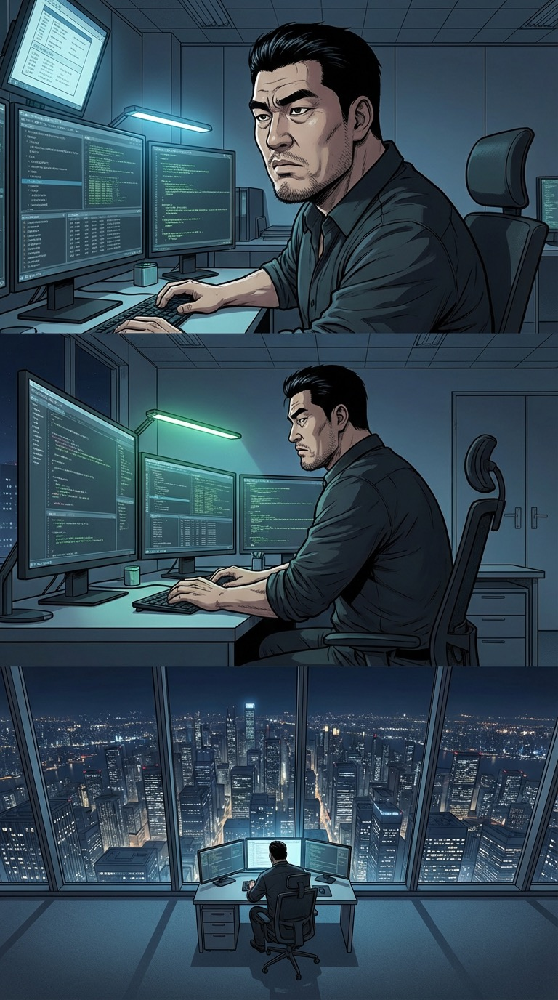
F1 · 生成中
'">
🏢 场景：2025年 · 现代科技公司办公室 · 深夜
📷 中景 · 略俯拍 · 冷色调荧光灯
偌大的办公室只剩角落一盏台灯。朱江坐在工位前，深色衬衫领口松开，桌上散落着咖啡杯和文件。三块显示屏亮着密密麻麻的数据报表。窗外是城市凌晨三点的灯光。
又是凌晨三点。这种日子，过了多少年了？
😐 疲惫、麻木、机械性的坚持
02/45
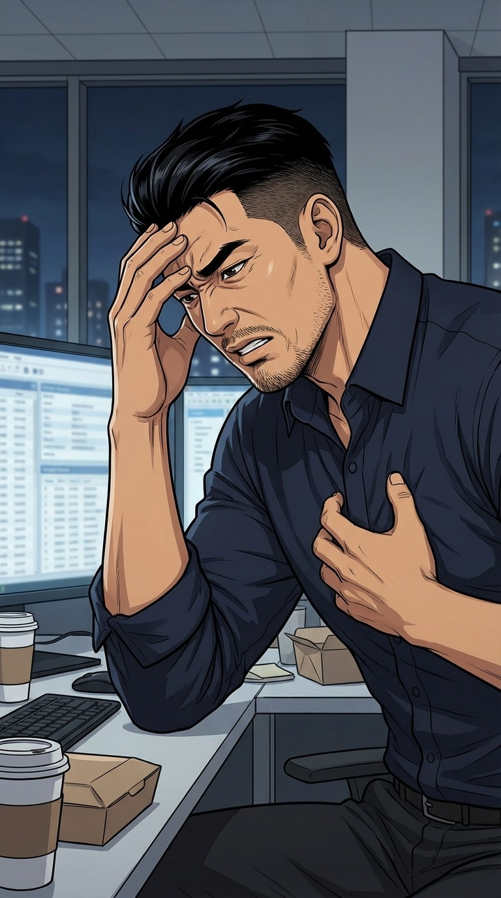
F2 · 生成中
'">
🏢 场景：同上 · 办公室工位
📷 特写 · 平拍 · 镜头微晃模拟眩晕
朱江突然捂住胸口，身体猛地前倾。咖啡杯被手肘碰翻，深棕色液体在文件上蔓延。屏幕上还显示着"公司估值报告 — 2025Q4"。他的眼镜歪了，额头渗出冷汗。
咣——
不…不对…胸口…
😨 剧痛、恐惧、不可置信
03/45
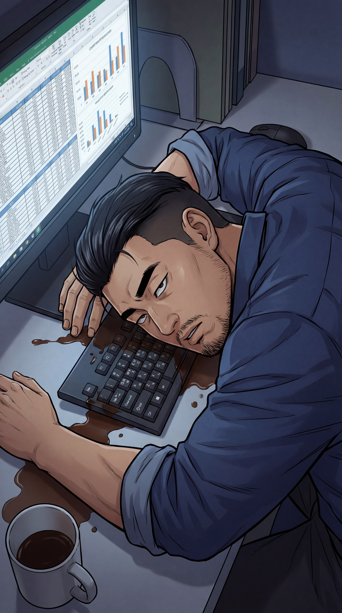
F3 · 生成中
'">
🏢 场景：同上
📷 仰拍 · 从地面视角 · 天花板日光灯刺眼
视角从地面仰视——朱江侧倒在地板上，眼镜滑落，视线逐渐模糊。三块显示屏的光在他瞳孔中缩成小点。
我这辈子，赚了很多钱，但好像一直在追什么……到底在追什么呢……
😔 释然、遗憾、意识消散
04/45
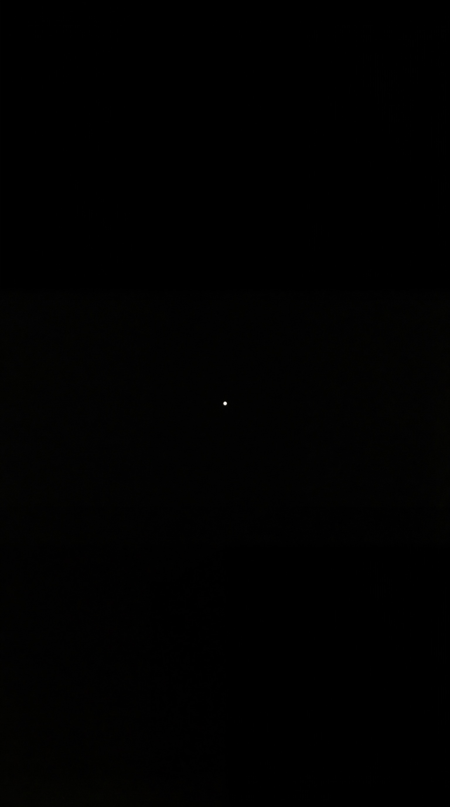
F4 · 生成中
'">
…………
一片漆黑。什么都没有。
然后——
叮铃铃铃铃——！
闹钟响了。
05/45
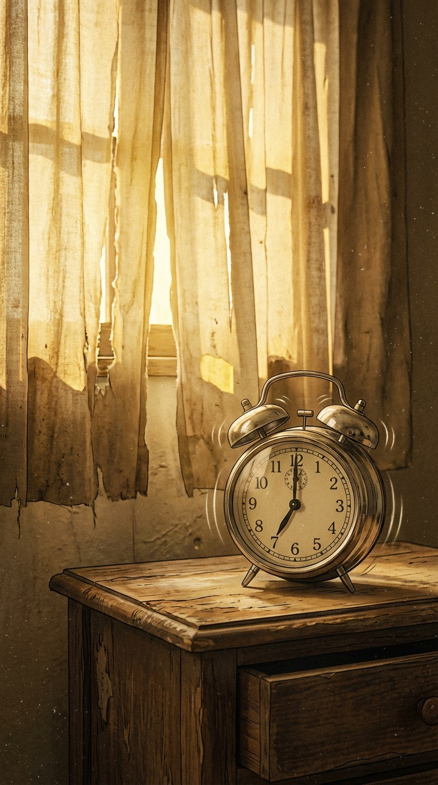
F5 · 生成中
'">
🏫 场景：2005年9月15日 · 大学男生宿舍 · 清晨
📷 主观视角（第一人称睁眼） · 仰拍天花板 · 暖黄色调
视线从模糊到清晰——破旧的天花板，贴满海报的墙壁（CS游戏海报、周杰伦海报），上铺的被子垂下来一角。一个老式闹钟在床头柜上跳着。旁边是一本翻开的《大学英语》课本。
……什么？我……在哪？
😳 混乱、茫然
06/45
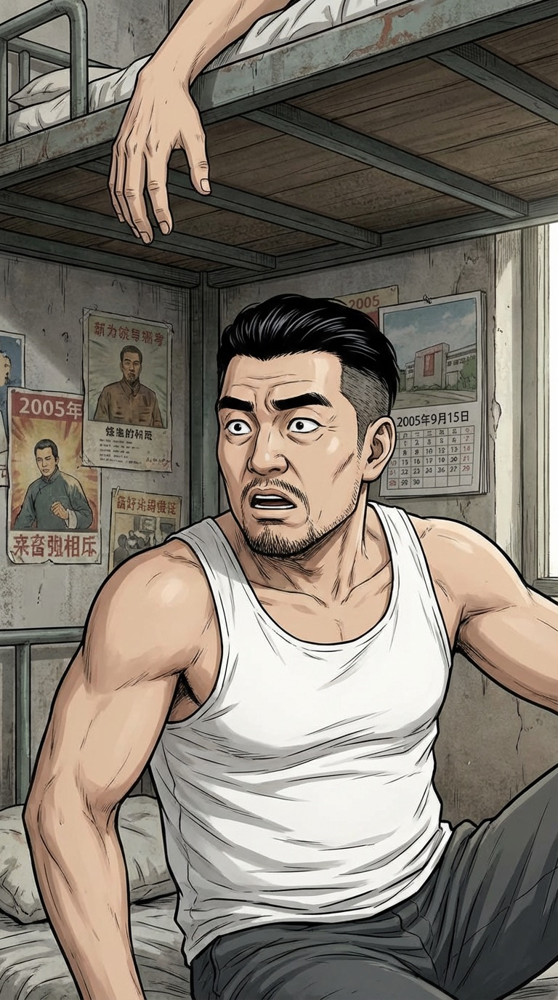
F6 · 生成中
'">
🏫 场景：同上 · 宿舍
📷 中景 · 平拍 · 朱江坐在下铺看向对面
朱江猛地坐起来。对面上铺，一个瘦高个染着黄头发的年轻人正四仰八叉地打着呼噜，嘴角还挂着昨晚的薯片渣。床头贴着一张撕了一半的日历——2005年9月。
大飞……？2005年的大飞？？日历……2005年9月15号？！
😱 震惊到极点
07/45
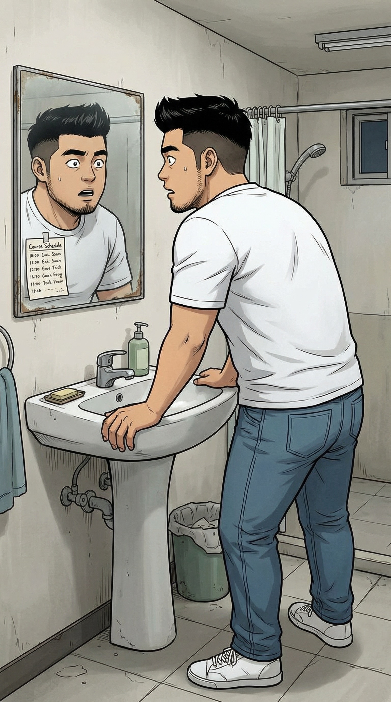
F7 · 生成中
'">
🏫 场景：宿舍走廊 · 公共洗漱间
📷 中近景 · 镜子反射 · 朱江双手撑着洗手台看向镜中的自己
朱江光着脚冲进洗漱间，双手撑在洗手台上，盯着镜子里的人——年轻了二十岁的脸。没有眼袋，没有白发，下巴上刚冒出的短胡茬。白色背心，大二男生的模样。
这张脸……二十岁。我他妈的……真的回来了？！
😲→😁 从震惊到狂喜
08/45
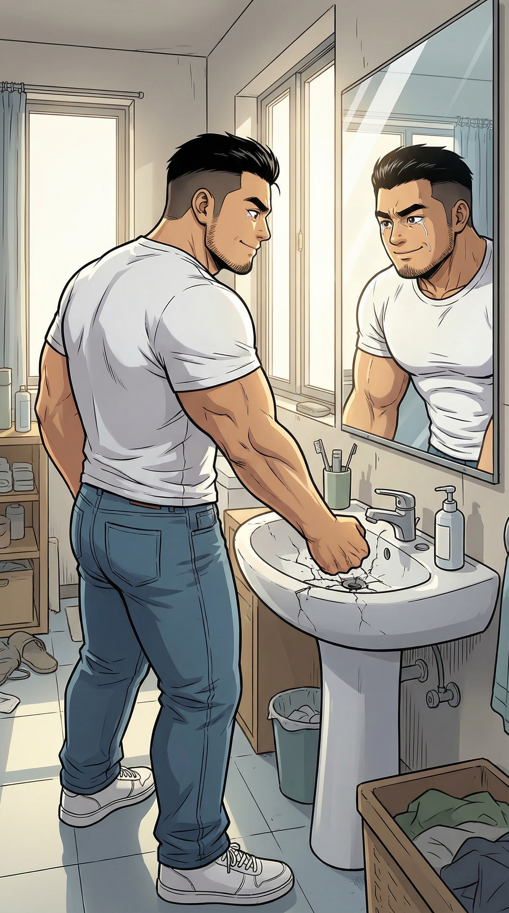
F8 · 生成中
'">
🏫 场景：同上
📷 特写 · 略仰拍 · 镜中倒影 · 朱江露出坚定的笑
朱江用水抹了把脸，看着镜中年轻的自己，嘴角慢慢上扬。眼神里有一种不属于二十岁年轻人的锐利和坚定。
这一次，我要做一件所有人都觉得我疯了的事。
🔥 坚定、兴奋、蓄势待发
· · ·
09/45
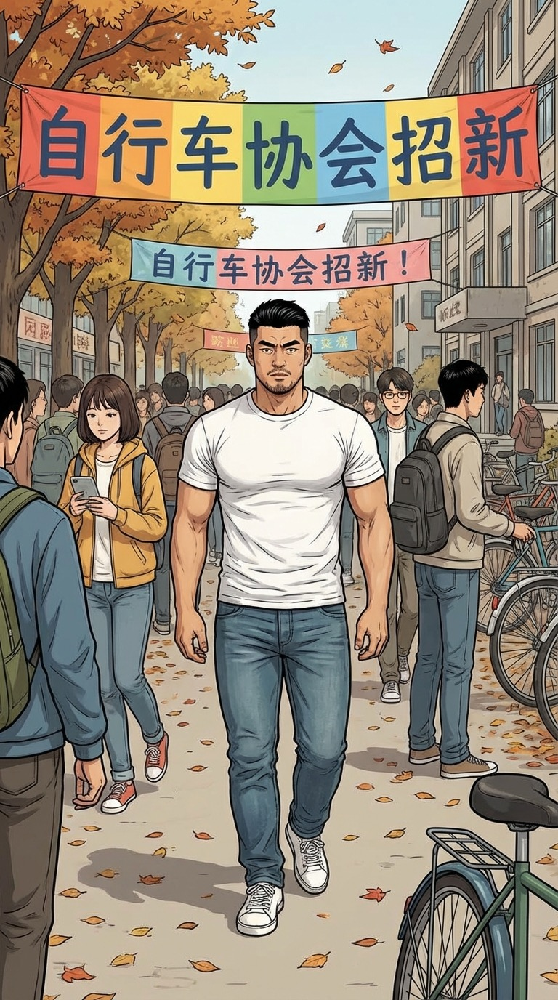
F9 · 生成中
'">
🏫 场景：2005年 · 大学校园 · 白天
📷 远景 · 平拍 · 校园全貌
阳光下的大学校园。学生们骑着自行车穿梭，有人抱着厚厚的考研书，有人在宣传栏前看招聘信息。朱江穿着白色运动T恤和牛仔裤走在其中，看起来和周围同学没什么不同——除了他的眼神。
2005年。中国网民刚过一亿。淘宝成立两年。百度刚上市。所有人都在讨论考研和考公。
😏 平静中暗藏野心
10/45
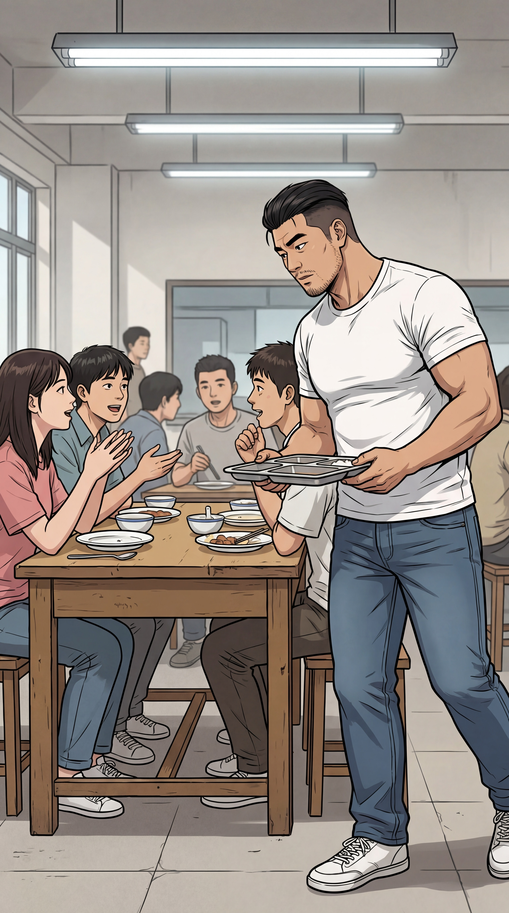
F10 · 生成中
'">
🏫 场景：校园路上
📷 中景 · 平拍 · 朱江和两个同学并排走
同学甲
老朱，你考研报了没？张教授的名额就剩两个了。
二十年后的世界告诉我，考研改变不了什么。真正改变命运的东西，就在校门口那条街上。
11/45
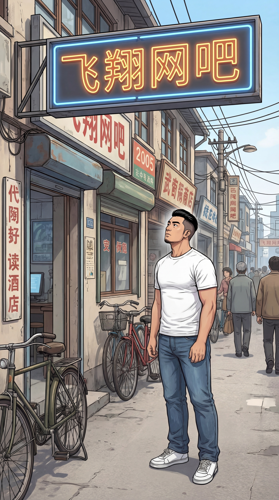
F11 · 生成中
'">
🎮 场景：校门口 · "兄弟连网吧" · 门口
📷 中景 · 略仰拍 · 朱江站在网吧门口仰头看招牌
破旧的招牌上写着"兄弟连网吧 · 2元/小时"。门口堆着几辆自行车，里面传出键盘声和叫喊声。朱江推门而入，一股方便面和烟草混合的味道扑面而来。
哗——（推门声）
😌 怀念、感慨
12/45
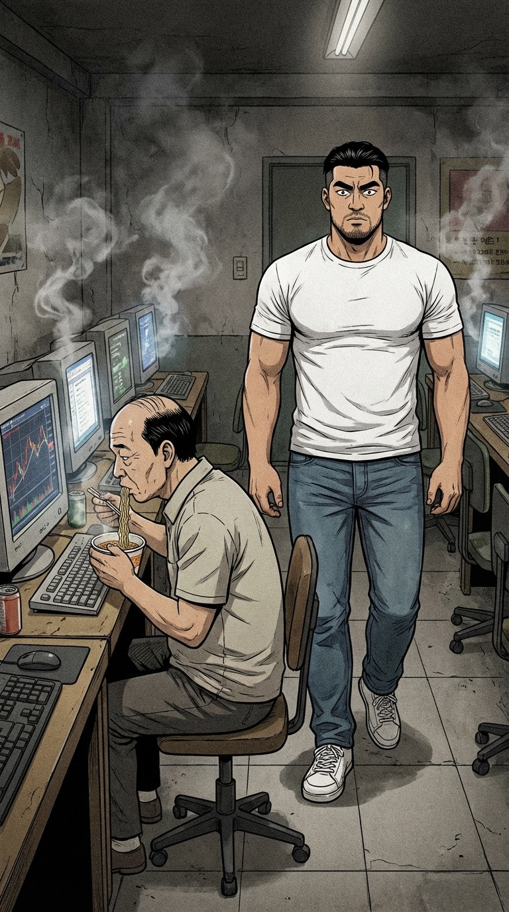
F12 · 生成中
'">
🎮 场景：网吧内部
📷 全景 · 朱江的主观视角扫视 · CRT显示器的幽蓝光
三排CRT显示器发着幽蓝色的光。有人在打CS，有人在看股票，角落里一个大叔在看新闻。烟雾缭绕，键盘被摸得油光发亮。前台是一个嗑瓜子的网管妹子。
2005年，中国有十三万家网吧，四千万网民。但没人知道，这些坐在CRT显示器前的年轻人里，藏着一个千亿产业的火种。
13/45
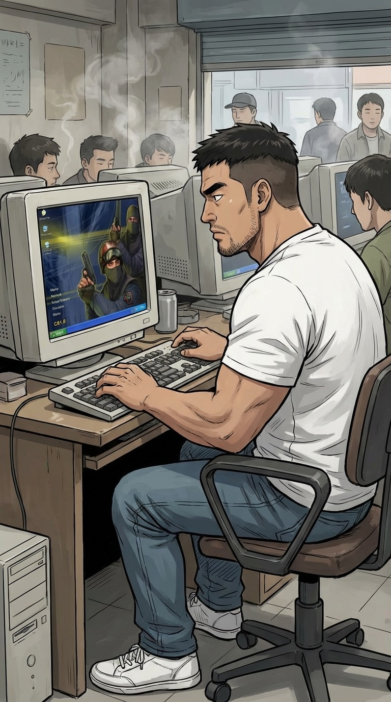
F13 · 生成中
'">
🎮 场景：网吧 · 朱江的机位
📷 过肩镜头 · 从朱江背后看CRT屏幕 · Windows XP桌面
朱江坐下，登录CS1.6。熟悉的界面，熟悉的地图。手指放上键盘——肌肉记忆还在，但手速明显迟钝了。他选了AK-47，进入dust2。
手感生疏了……二十年没摸过CS了。不过没关系，手速是选手的事，我需要的不是手速。
14/45
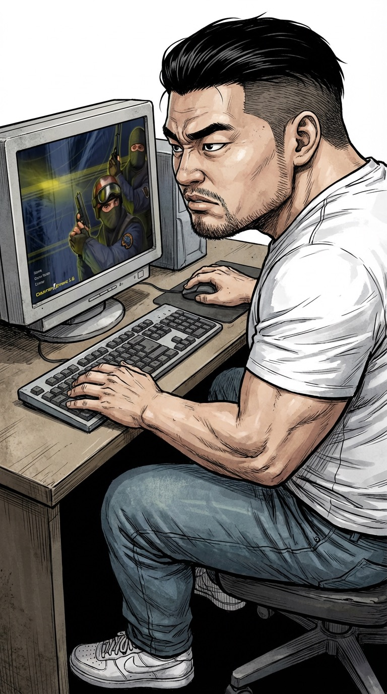
F14 · 生成中
'">
🎮 场景：网吧 · 大飞的机位（朱江右手边两个位置）
📷 中景 · 侧拍 · 从朱江的视角看向大飞
旁边传来一阵疯狂的键盘声。朱江转头看——大飞叼着棒棒糖，染着黄头发，整个人窝在椅子里，姿势极其不正规，但手指在键盘上飞速跳动。屏幕上，他正在1v5。
嗒嗒嗒嗒嗒——（键盘连击声）
……这操作。
15/45
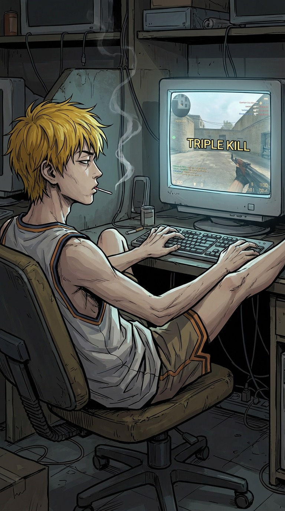
F15 · 生成中
'">
🎮 场景：大飞的CRT屏幕
📷 特写 · CRT屏幕画面 · CS1.6游戏界面
屏幕上，大飞的角色在dust2中腰B通道，一个急停甩狙——爆头。转身，切手枪，两枪两个。最后一个躲在箱子后面，大飞贴着墙滑步闪出，一发穿箱爆头。全场5杀。
甩狙精度、急停时机、切枪速度……这小子在故意压着打。他的真实水平比这还高。放在十年后，至少值两千万签约费。
🤩 惊叹、发现宝藏的兴奋
DECISION-1：要不要主动搭话？
✅ 我的选择：主动过去搭话
💭 理由：创业者的本能——看到talent就想recruit。上辈子我最后悔的事之一就是错过了太多人才。这一次，第一个人才，我绝不会再放过。
17/45
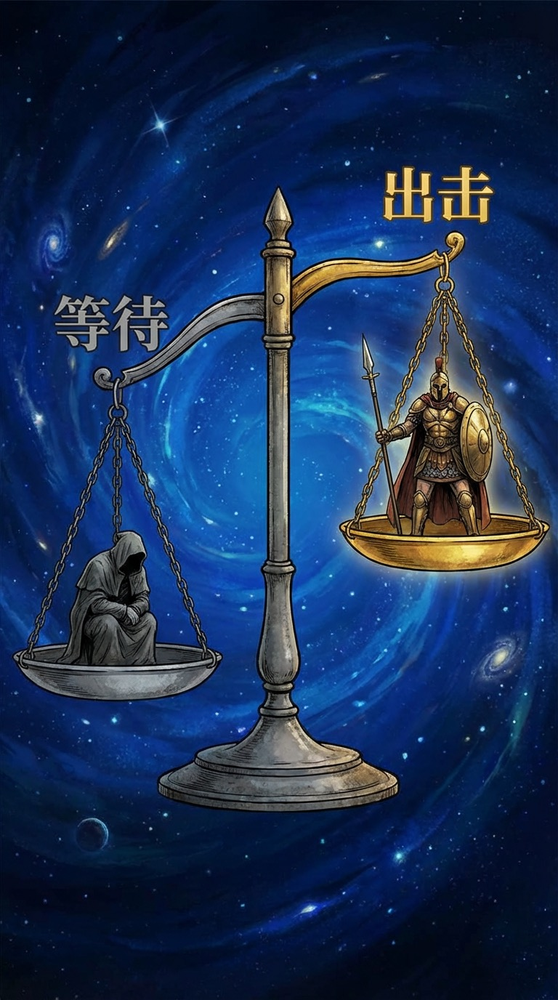
F17 · 生成中
'">
🎮 场景：网吧 · 大飞的机位旁
📷 中近景 · 朱江站在大飞身后 · 大飞仰头看他
朱江（靠在大飞旁边的空椅子上）
刚才B通道那三枪，你是故意拉低了灵敏度打的吧？正常灵敏度你能更快。
大飞嘴里的棒棒糖差点掉了。
😎 朱江很笃定 / 大飞很震惊
18/45
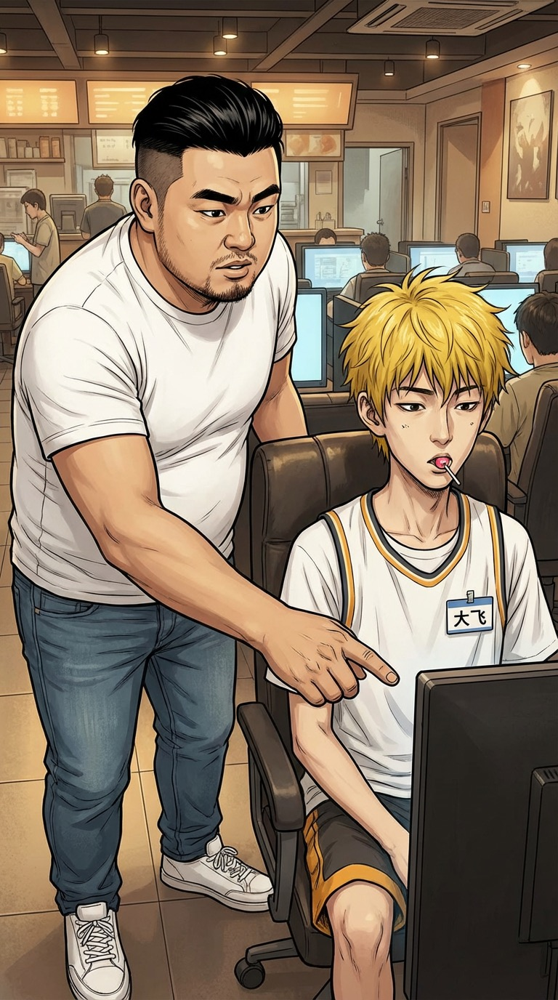
F18 · 生成中
'">
🎮 场景：同上
📷 双人中景 · 大飞坐着朱江半蹲 · 两人面对面
朱江
你的急停甩狙间隔是0.3秒，但你的肌肉反应速度至少能做到0.15秒。你在solo的时候故意放慢节奏——因为赢太快就没意思了，对不对？
大飞把棒棒糖从嘴里拿出来，第一次认真地看着朱江。
小子，你遇到的不是一个普通玩家。你遇到的是一个看过未来的人。
19/45
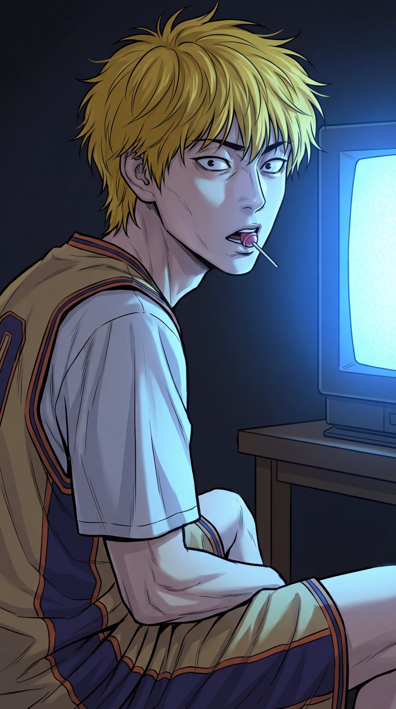
F19 · 生成中
'">
🎮 场景：同上
📷 中景 · 朱江站起来 · 有一种不属于大学生的气场
大飞（笑了）
组战队？哈哈哈哈！打游戏能当饭吃？你没毛病吧？
朱江（没笑）
你现在觉得好笑。十年后你会觉得，今天是你这辈子最重要的一天。
😂 大飞觉得很搞笑 / 🔥 朱江极其认真
20/45
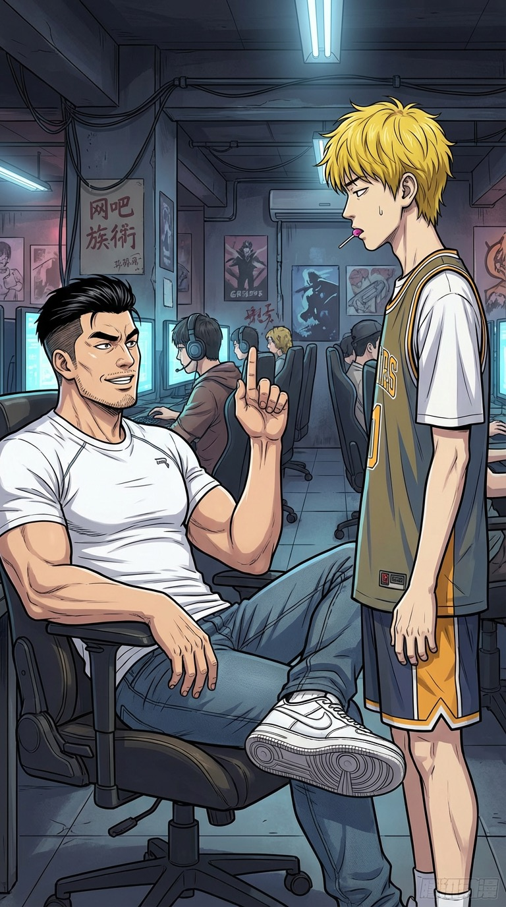
F20 · 生成中
'">
🎮 场景：同上
📷 大飞特写 · 笑容慢慢收敛 · 棒棒糖叼在嘴角
大飞看着朱江的眼神，笑容渐渐收了。这个人的眼睛里有一种东西——不是年轻人的冲动，是一种经历了很多事之后才会有的笃定。
大飞（把棒棒糖换了个方向叼着）
……行，你先说说，组战队干嘛？打比赛？打了赢了然后呢？
21/45
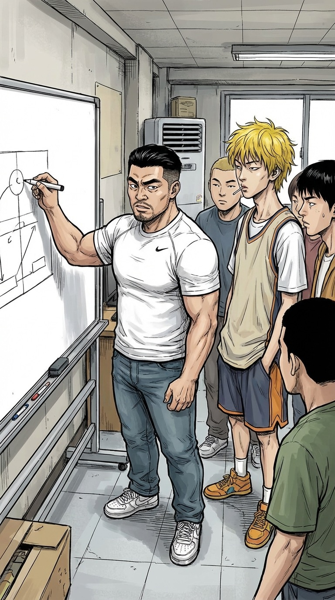
F21 · 生成中
'">
🎮 场景：网吧角落 · 朱江在白板上画图
📷 全景 · 朱江站在借来的白板前 · 大飞和几个好奇的网友围着看
朱江不知从哪借了个白板（其实是从前台网管那里要的记账板），开始画——"电竞产业链"。左边写"选手"，中间画了箭头指向"赛事"，右边写"直播平台"，上面写"赞助商"，下面写"粉丝经济"。
朱江
你们知道韩国有个东西叫OGN吗？专门转播星际争霸比赛的电视台。一场比赛，十万人在线看。
22/45
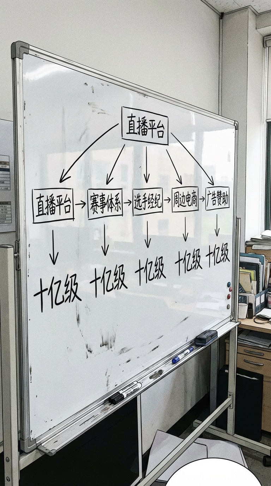
F22 · 生成中
'">
🎮 场景：同上
📷 中景 · 朱江越说越激动 · 在白板上写数字
朱江
现在中国有四千万网民，五年后会到五亿。打游戏的人会从几百万变成几个亿。这么多人看比赛、打比赛、为选手花钱——你们算算这是多大的生意？
旁边一个在看股票的大叔转过头来听了两句，又转回去了。一个泡面还没泡好的同学嘴巴微张。
我知道在2005年说这些像疯子。但我见过2025年。我知道这一切都会发生。
23/45
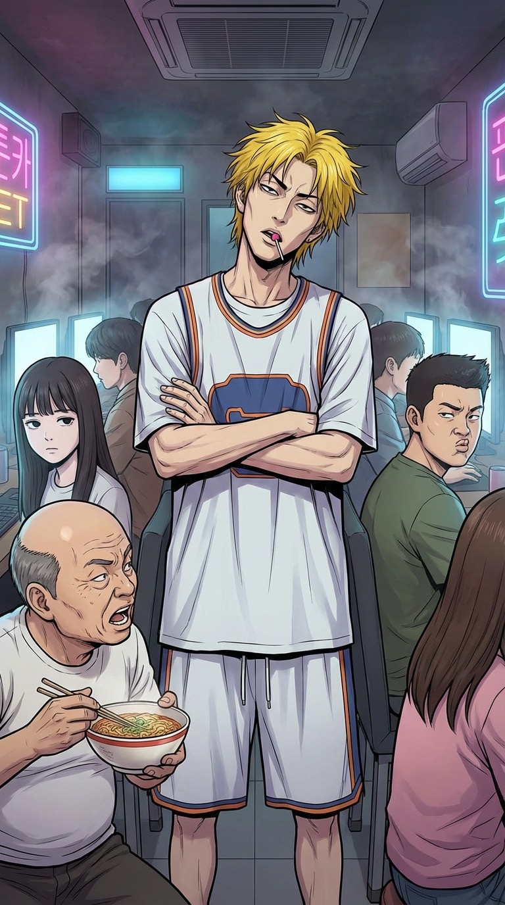
F23 · 生成中
'">
🎮 场景：同上
📷 多人中景 · 围观者的各种表情
围过来的人越来越多——有觉得他在吹牛的（笑着摇头），有听得认真的（若有所思），有纯看热闹的（嗑瓜子）。
围观者乙
不是不是，他说的那个韩国OGN我听说过，确实有。
网管妹子（从前台探头）
你们安静点！影响其他顾客了！
24/45
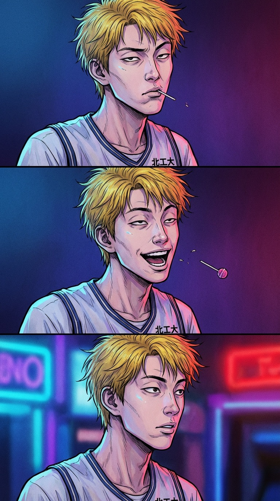
F24 · 生成中
'">
🎮 场景：同上 · 白板前
📷 大飞中近景 · 叼着棒棒糖 · 歪头看白板上的产业链图
大飞（歪着头看了半天白板）
你说的这些，我一个字都听不懂。
顿了顿。
😁 痞帅的笑 · 一种莫名其妙的信任
25/45
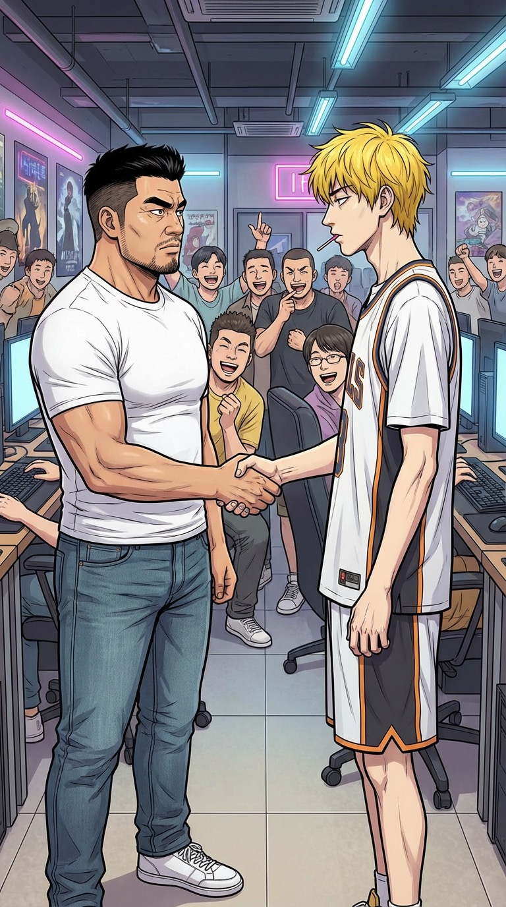
F25 · 生成中
'">
🎮 场景：同上
📷 特写 · 两只手握在一起 · 白板上的"电竞产业链"做背景虚化
朱江伸出手。大飞看了一眼，把棒棒糖从左手换到嘴里，然后伸出右手——两只手紧紧握在一起。
第一个队友。上辈子我是在咖啡馆里签合伙人的。这辈子，是在网吧里。不过意思是一样的——创业，从找到第一个对的人开始。
🔥 热血 · 两个完全不同的人达成了某种默契
· · ·
26/45
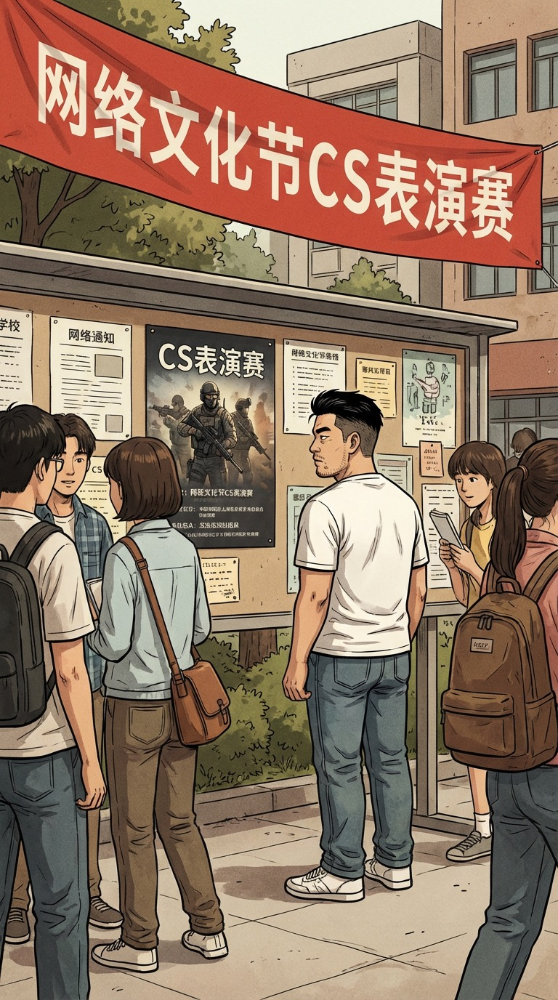
F26 · 生成中
'">
🏫 场景：校园宣传栏 · 白天
📷 特写 · 一张红底黄字的海报 · 朱江的手指着其中一行
宣传栏上贴着一张手写海报："第三届网络文化节 · CS1.6表演赛 · 报名截止9月25日 · 冠军奖品：网吧包月卡×3"。朱江的手指点在"CS1.6表演赛"上。
创业第一步，永远是做出一个MVP让人看到。奖品不重要，重要的是——被人看到。
27/45
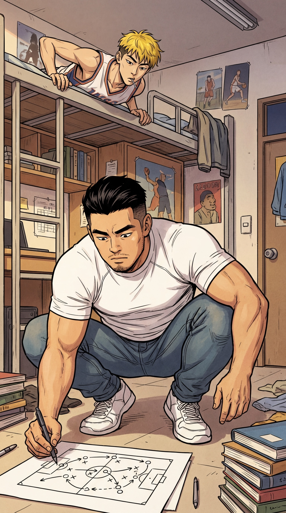
F27 · 生成中
'">
🏫 场景：大学食堂 · 午饭时间
📷 中景 · 朱江和大飞面对面坐着 · 餐盘上是食堂菜
28/45
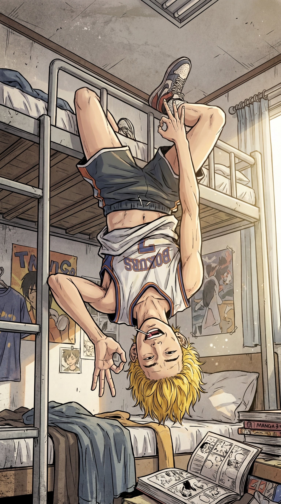
F28 · 生成中
'">
🏫🎮 场景：多场景蒙太奇 · 校园各处
📷 快速剪辑风格 · 多角度多场景
蒙太奇：朱江在自习室找人（被拒绝）→ 在篮球场找人（对方说打游戏没出息）→ 在网吧里找到三个水平还行的同学 → 五个人挤在一台机子前看朱江画战术图 → 大飞叼着棒棒糖在旁边打瞌睡。
三天，跑了半个学校。最后凑齐的五个人：一个天才（大飞）、两个还行的、一个纯凑数的、和一个自封指挥官的（我）。够了。MVP不需要完美，需要的是——上场。
DECISION-2：比赛策略——稳健打还是秀操作？
✅ 我的选择：设计一套2005年从没出现过的rush战术——风险大但观赏性爆炸
💭 理由：稳健打也许能赢，但没人会记住。我需要的不仅是赢，还要所有人都记住我们。创业的本质是什么？是让别人记住你。所以——菩萨心肠霹雳手段，打就打最炸的。
29/45
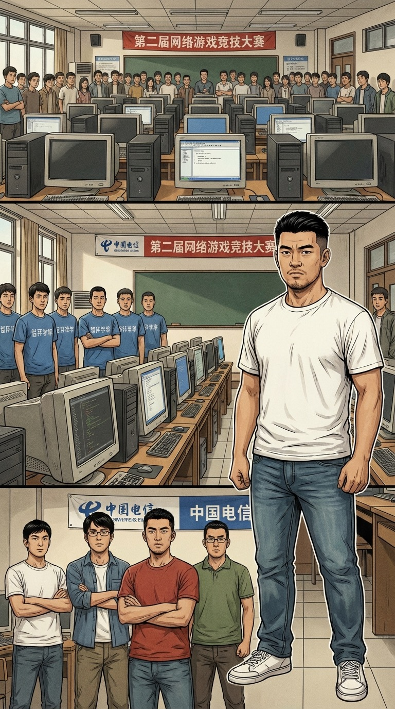
F29 · 生成中
'">
🎮 场景：网吧 · 深夜 · 赛前训练
📷 中景 · 五个人围着朱江 · 白板上画着dust2地图
朱江（指着地图）
开局五个人全部rush B。烟雾弹这里、闪光弹这里、我喊三二一，全部冲。
这套rush B战术，2005年没人见过。因为它是2015年才被欧洲战队发明的。先进十年的战术打业余比赛——这叫什么？这叫降维打击。
30/45
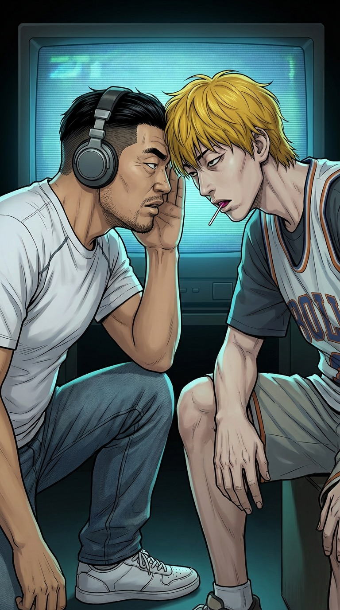
F30 · 生成中
'">
🎮 场景：学校机房 · "网络文化节"CS表演赛现场
📷 全景 · 机房里两排电脑面对面 · 中间有观众围观
简陋的比赛现场——学校机房，十台电脑分成两排。但围观的学生挤了满满一屋子。对面坐着计算机系"字节码"战队，五个戴着统一T恤的老选手，表情很轻松。朱江的队伍没有统一T恤——大飞穿着一件印着"我饿了"的黑色T恤。
31/45
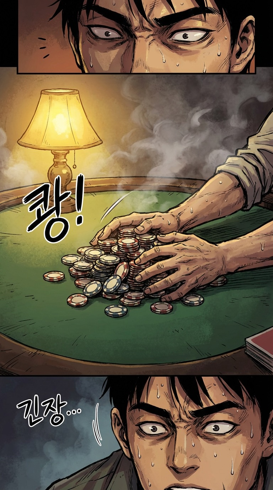
F31 · 生成中
'">
🎮 场景：比赛进行中 · 游戏画面+选手反应
📷 快速切换 · 游戏画面与选手表情交叉剪辑
三……二……一——冲！
朱江一声令下。五个人同时扔出闪光弹和烟雾弹，画面一片白。然后——五把AK的枪声同时响起，全部rush B！对面计算机系选手完全没反应过来，B点两个防守队员在0.8秒内被放倒。
😱 全场震惊
32/45
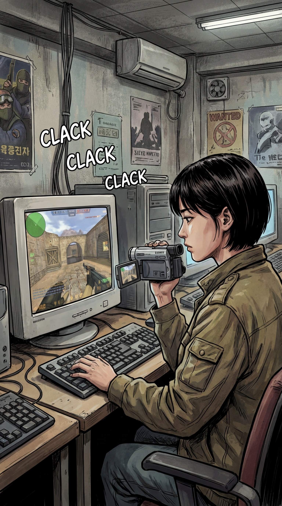
F32 · 生成中
'">
🎮 场景：比赛现场侧面
📷 中景 · 林薇举着DV在拍 · 她的表情从无聊变成专注
人群后面，一个短发女生背着书包，举着一台老式DV摄像机在拍。她本来是被派来拍"网络文化节活动花絮"的，此刻她的眼睛里亮起了光——这不是普通的游戏，这是一场精心策划的表演。
33/45
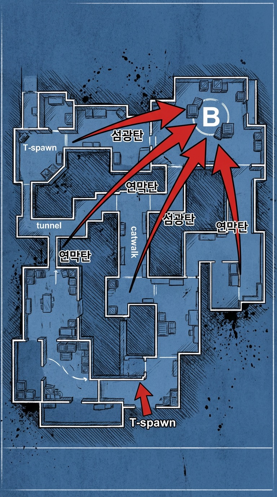
F33 · 生成中
'">
🎮 场景：比赛进行中
📷 快速蒙太奇 · 比分跳动
连续几局蒙太奇：朱江喊出不同的战术（rush A→fake B转A→全员散开），每一局的战术都不同，计算机系完全摸不清套路。比分迅速拉开——4:1、6:2、8:3。对面计算机系队长的表情从轻松变成凝重变成冒冷汗。
知道为什么你们永远猜不到我的战术吗？因为这些战术来自未来。每一局，我都在用不同年份的经典战术。2008年的、2012年的、2016年的——你们面对的不是一支战队，是十年的电竞进化史。
34/45
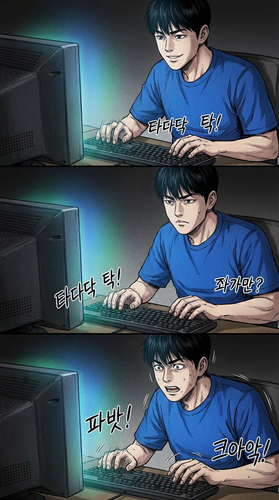
F34 · 生成中
'">
🎮 场景：决胜局
📷 特写 · 大飞的脸 · 棒棒糖已经被咬碎了 · 他拿出了新的一根
比分12:4。决胜局。朱江的队伍三人阵亡，只剩大飞和一个队友。队友也被击倒——现在是大飞1v3。
😤 极度专注 · 猎手的眼神
35/45
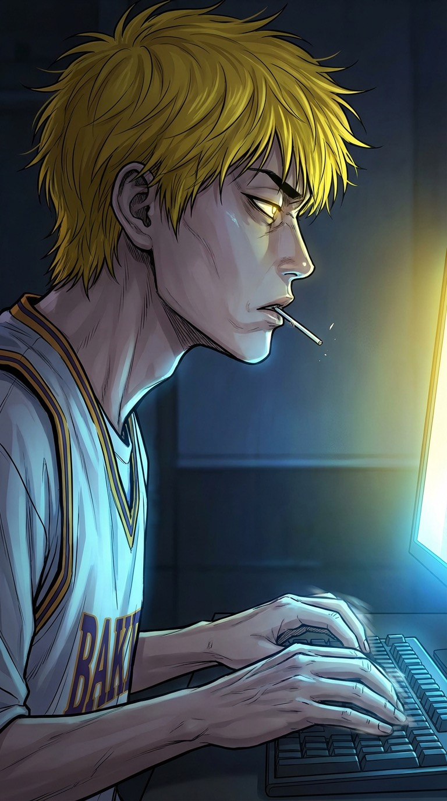
F35 · 生成中
'">
🎮 场景：决胜局 · 1v3
📷 特写切换 · 大飞的手指→屏幕→观众→屏幕
大飞的手指像弹钢琴一样在键盘上跳动。他的角色从B洞冲出，AWP一声巨响——第一个倒。切手枪，滑步闪出——嘭嘭——两发两个。1v3，三秒结束。
砰——！啪啪！
全场寂静了半秒。
36/45
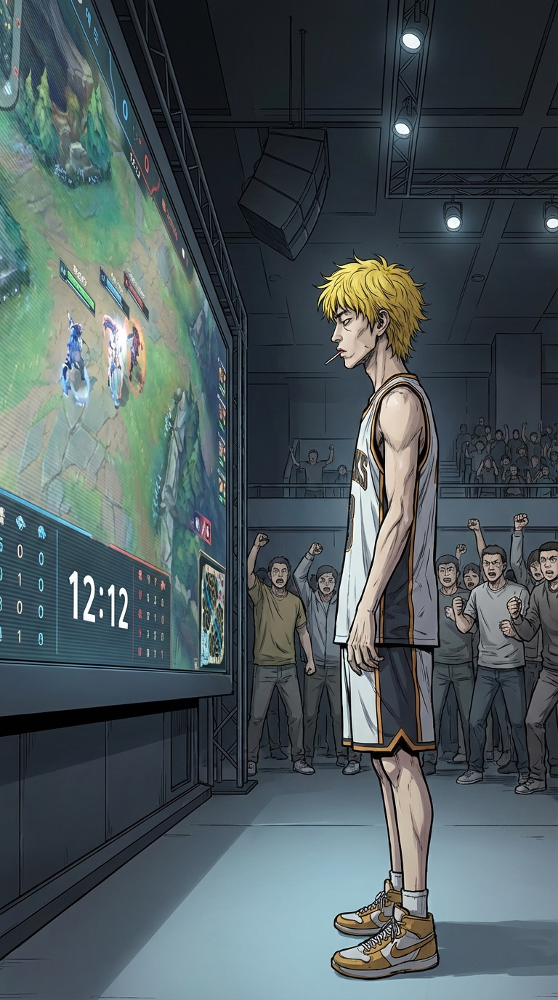
F36 · 生成中
'">
🎮 场景：比赛现场
📷 全景 · 从高处俯拍 · 人群爆发
哇啊啊啊啊啊——！！
机房炸了。所有人从座位上跳起来，有人在拍桌子，有人在尖叫。大飞靠在椅背上，叼着棒棒糖，双手枕在脑后，一脸"这不是理所当然的吗"的表情。朱江站起来，和队友击掌。林薇的DV镜头一直对着他们。
🎉 全场沸腾 · 高光时刻
37/45
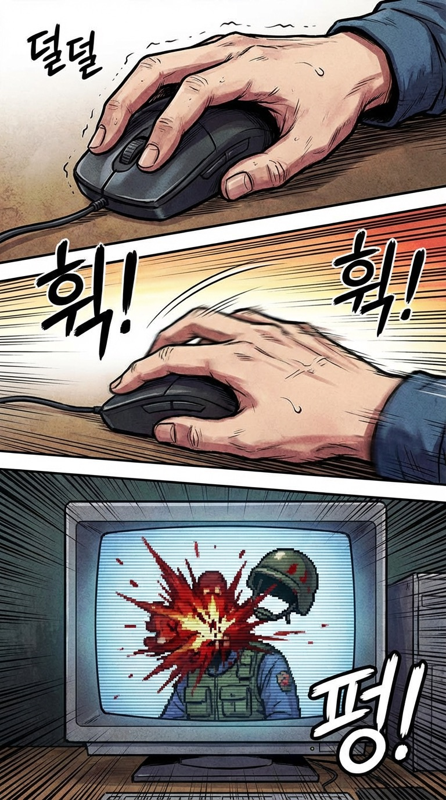
F37 · 生成中
'">
🏫 场景：机房门口
📷 中景 · 门口 · 陈校长皱着眉头往里看
门口，一个秃顶啤酒肚的中年男人穿着灰色夹克，手里拿着茶杯，皱着眉头往里看——陈校长。他看了一眼欢呼的学生，摇了摇头。
他转身走了。
38/45
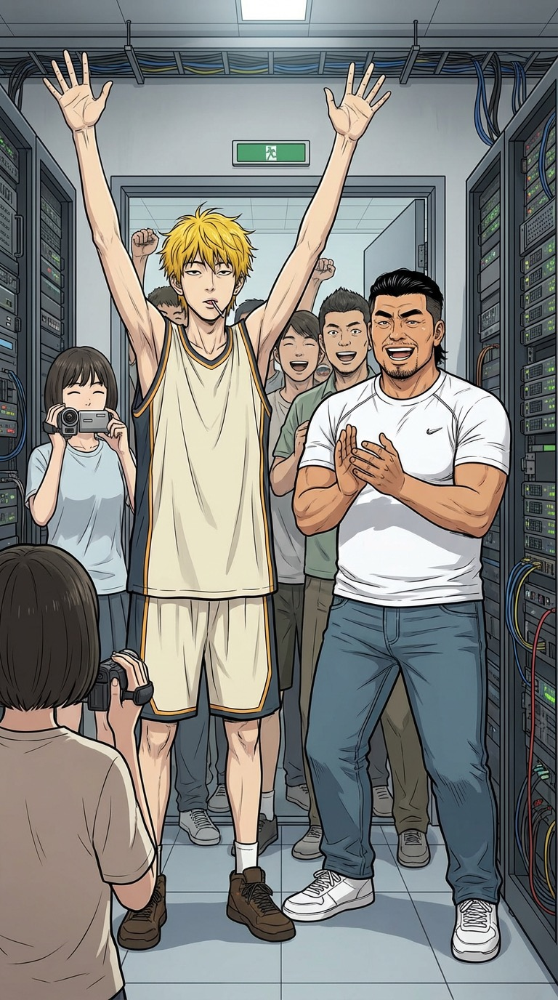
F38 · 生成中
'">
🎮 场景：机房内
📷 双人近景 · 朱江和大飞对视 · 笑了
朱江看到了门口陈校长的背影。他和大飞对了个眼神——两个人同时笑了。不是嘲笑，是一种"你等着看"的笑。
老板（我习惯叫自己老板），这才刚开始。
😄 自信的默契
· · ·
39/45
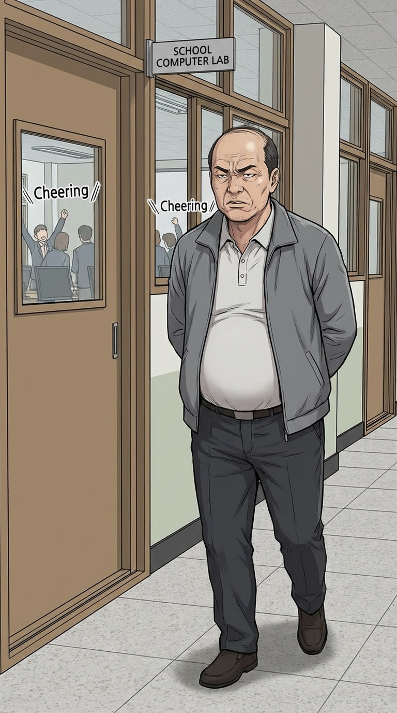
F39 · 生成中
'">
🏫 场景：宿舍 · 深夜
📷 过肩镜头 · 朱江面对老旧台式电脑 · 屏幕发出淡蓝光
夜深了。宿舍里其他人都睡了，大飞在上铺翻了个身打了个响鼻。朱江坐在台式电脑前，打开IE浏览器，在百度搜索栏里输入："2005年WCG中国赛区"。
如果我记得没错……三个月后，WCG中国赛区选拔赛。冠军奖金五万块。
40/45
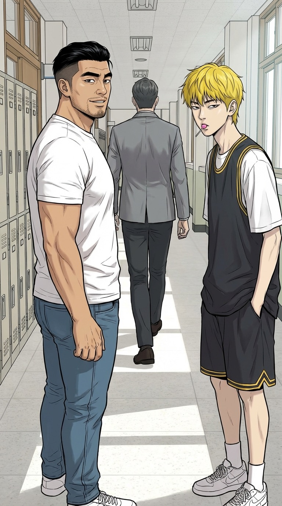
F40 · 生成中
'">
🏫 场景：同上 · CRT显示器特写
📷 特写 · CRT显示器上的百度搜索页面
CRT屏幕上，百度搜索结果页面慢慢加载（2005年的网速）。"WCG2005中国区总决赛——CS1.6项目报名通知……"朱江的手指划过屏幕上的报名截止日期。
2005年的五万块。够我们租一个训练基地，加三个月的方便面钱。够了。第一桶金，就从这里开始。
41/45
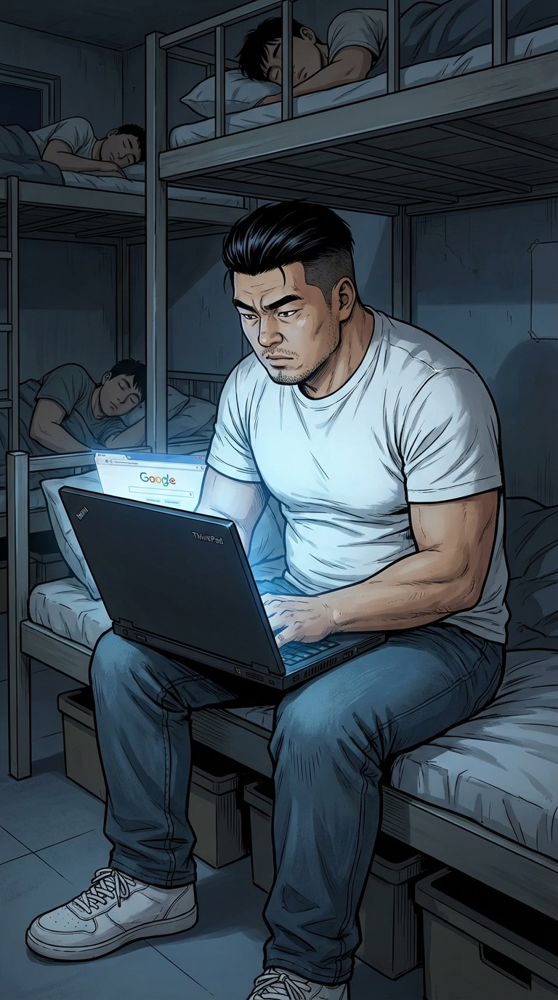
F41 · 生成中
'">
🏫 场景：同上
📷 侧面中景 · 朱江在纸上写计划 · 台灯暖光
朱江拿起笔，在一张草稿纸上写下三行字：① 三个月拿下WCG中国区 ② 用奖金租训练基地 ③ 建立品牌。他在"品牌"下面画了个圈，又加了两个字——"造王者"。
上辈子，我在三十五岁才开始创业。这辈子，我要在二十岁就开始。而且我已经知道了终点在哪里。
42/45
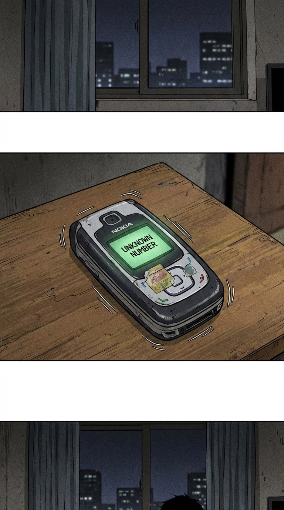
F42 · 生成中
'">
🏫 场景：同上
📷 特写 · 2005年翻盖手机在桌上震动 · 未知号码
桌上，一台银色摩托罗拉翻盖手机突然震动起来。屏幕上显示一个陌生号码。凌晨一点来电——不寻常。
嗡嗡嗡——
43/45
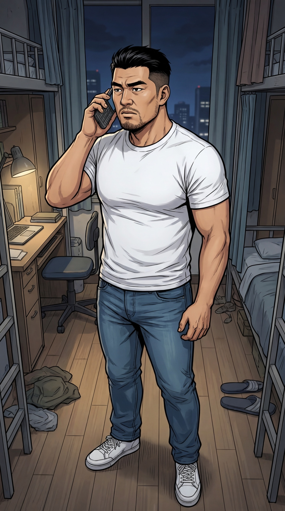
F43 · 生成中
'">
🏫 场景：同上
📷 中近景 · 朱江翻开手机贴耳 · 侧脸被屏幕光照亮
电话那头
我是城东"战狼"网吧的老板。我这儿有个战队，在这片打了三年了。听说来了个新队伍，很有意思。想约一场，切磋切磋。
来了。消息传得比我预想的快。
DECISION-3：接受约战的真正原因是什么？
✅ 我的选择：接受——不只是为了赢，而是为了建立reputation
💭 理由：赢一场校赛没人记得。但如果连续打败城里最强的网吧队——整个圈子都会知道我们。创业第一步不是做产品，是做品牌。我需要所有人都在讨论："那个叫朱江的，到底什么来头？"
44/45
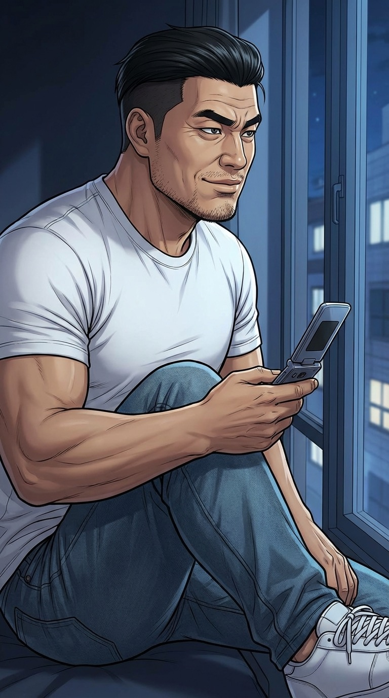
F44 · 生成中
'">
🏫 场景：同上
📷 特写 · 朱江嘴角上扬 · 手机贴着耳朵
😏 胸有成竹的笑
45/45
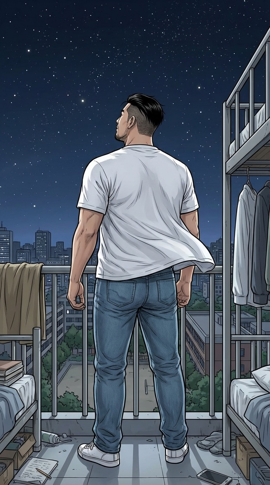
F45 · 生成中
'">
🏫 场景：宿舍阳台 · 深夜
📷 远景 · 朱江站在阳台 · 背影 · 仰望2005年的夜空
朱江走到宿舍阳台，靠着栏杆。2005年的夜空比2025年干净太多——能看到星星。远处是校园昏暗的路灯和网吧招牌的霓虹。夜风吹动他的白色T恤。
上辈子我错过了电竞黄金十年。这辈子，我要成为这个时代的造王者。
🔥 野心、决心、万丈豪情
⬇️ TO BE CONTINUED
《绝杀》第一章 · 完
第二章：战狼之战 · 即将更新